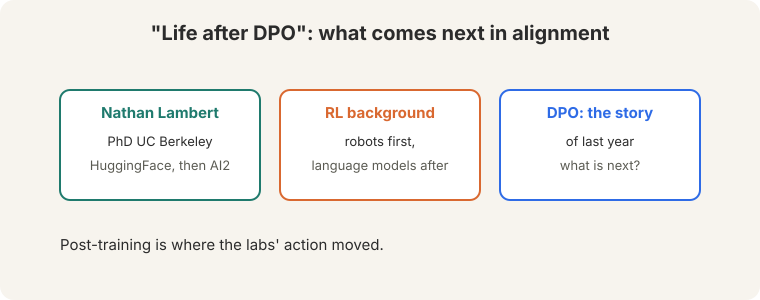
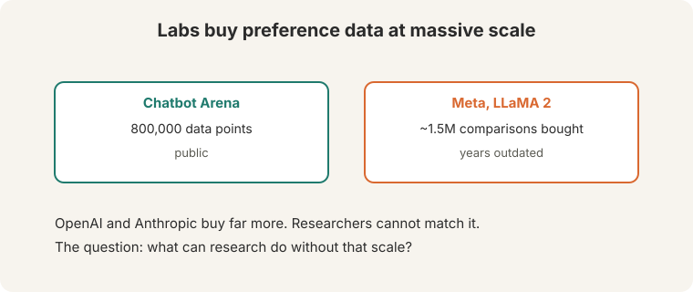
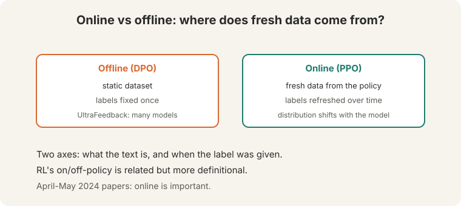
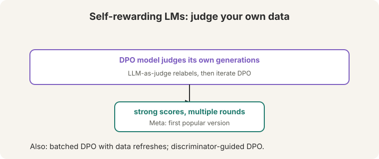
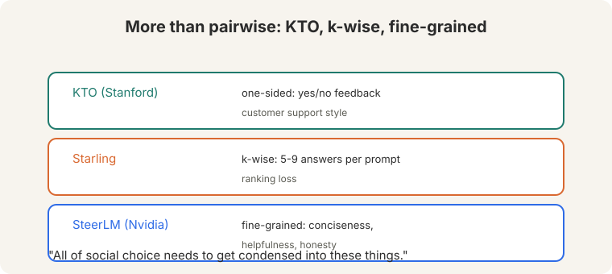
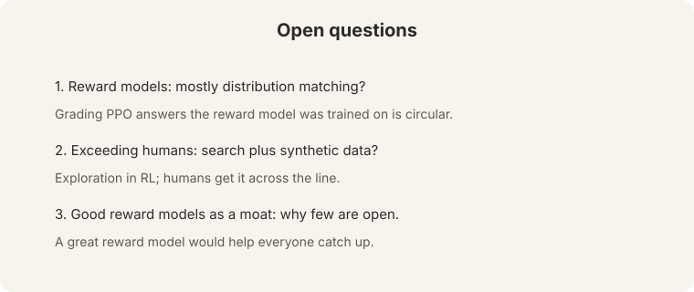
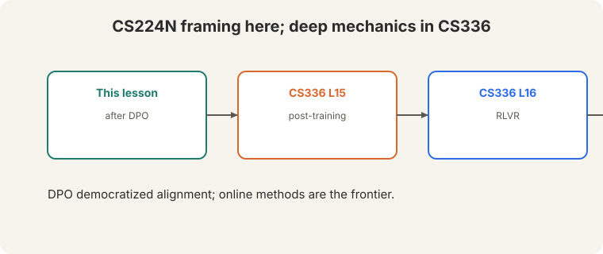

Lecture 15: Life After DPO (Bridge)
Video blocked (ad-blocker or local file mode).
Watch on YouTubeVideo not loading? Watch on YouTube
Invited talk. Nathan Lambert (AI2) on the state of alignment research after DPO.
Bridge lesson. This invited talk frames the alignment moment after DPO. For deep mechanics, follow the links: CS336 L15 (post-training systems), CS336 L16 (RL with verifiable rewards). This lesson never re-explains what those cover.
How to read this lesson
This lesson has two levels. Level 1 (Core) sets the scene: the speaker, the data scale, and the online/offline distinction. Level 2 (Deep) covers self-rewarding models, beyond-pairwise methods, and the open questions.
Level 1: The moment after DPO
Nathan Lambert: PhD at UC Berkeley, then HuggingFace, now AI2 (00:26 ⏱00:26). RL background: robots first, language models after. His talk: “Life after DPO.” DPO was “the story of last year” (2023). The question: what is the field interested in now?

The premise: more and more of the labs’ action moved from pretraining to post-training. Alignment research is now the main event.
Level 1: Preference data at lab scale

- Chatbot Arena: ~800,000 public data points (02:49 ⏱02:49).
- Meta’s LLaMA 2 paper: ~1.5M comparisons bought (02:53 ⏱02:53). Both “years outdated.” OpenAI and Anthropic buy far more.
Researchers cannot match that scale. The talk’s challenge: what can research do without lab resources?
Post-training is preference learning. More comparisons mean better reward models and better policies. Labs treat preference data as a moat: a great open reward model “would help people catch up in alignment.” Methods that need less data: DPO variants, self-rewarding loops, synthetic preferences, and better use of small high-quality sets. The talk’s research agenda is efficiency, not scale.
Level 1: Online versus offline
The central distinction (47:47 ⏱47:47):

- Offline (DPO). A static dataset. Labels fixed once. UltraFeedback distills generations from many models (Alpaca, Vicuna, GPT-3.5, GPT-4, LLaMA) into one policy.
- Online (PPO). Fresh data generated from the current policy. Labels refreshed over time. The distribution shifts as the model improves.
Two axes: what the text is and when the label was given. RL’s on/off-policy distinction is related but “more definitional” (47:21 ⏱47:21). alignment cares about fresh data and fresh labels. April-May 2024 papers agree: online is important.
Note: DPO “still has a reward model” in the math (13:17 ⏱13:17): the reference policy plays the reward’s role. Skipping the explicit reward model does not skip the concept.
Level 2: Self-rewarding models
Self-Rewarding LMs (Meta): the DPO model judges its own generations as an LLM judge, relabels the data, and iterates DPO (49:55 ⏱49:55).

Strong scores across rounds. Variations: batched DPO with data refreshes, discriminator-guided DPO (reward models plus DPO training). The pattern: close the loop between generation and judgment.
Level 2: Beyond pairwise
Pairwise preferences are not the only signal (61:21 ⏱61:21):

- KTO (Stanford): one-sided preferences. Customer apps already collect “was this helpful: yes/no.” Different loss, same idea.
- Starling: k-wise preferences. Five or nine answers per prompt, a ranking loss. One of the few open models that “broke through.”
- SteerLM (Nvidia): fine-grained labels per completion: conciseness, helpfulness, honesty.
“All of social choice needs to get condensed into these things” (62:50 ⏱62:50). Preference learning is voting theory with gradients.
When pairwise data does not exist. Products collect thumbs up/down, not A/B comparisons. KTO uses the abundant signal instead of demanding the scarce one. Use pairwise where you can afford it. Use one-sided where you must. One reward conflates qualities: a long answer can be helpful but not concise. Separate labels let you steer each axis independently. The cost is annotation complexity.
Level 2: Open questions

- What do reward models actually learn? “Mostly distribution matching,” the speaker guesses (60:08 ⏱60:08). Grading PPO answers with a reward model trained on the same prompts is circular.
- How do we exceed human performance? Old CS ideas return: search as exploration in RL, generating new data (63:41 ⏱63:41). Humans get it “across the line” where search cannot.
- Why are good reward models closed? Because they are a moat. Opening one would help everyone catch up.
Recap: the whole lesson on one screen
Eight ideas carry this lecture. Read each card. Say the core sentence out loud. If you can, you own the lesson.
Lambert (Berkeley, HF, AI2): post-training is where the action moved. The question is what comes after DPO.
Key: alignment is the main event
Arena: 800k public. Meta: 1.5M for LLaMA 2. Both outdated. Researchers cannot match it. Research must be efficient.
Key: data is a moat
Offline: static data, fixed labels. Online: fresh data from the policy, refreshed labels. Two axes: text and label timing.
Key: 47:47 ⏱47:47
Self-Rewarding LMs: LLM-as-judge relabels, iterate DPO. Close the loop between generation and judgment.
Key: 49:55 ⏱49:55
KTO: one-sided yes/no. Starling: k-wise ranking. SteerLM: fine-grained axes. Social choice with gradients.
Key: 61:21 ⏱61:21
Grading with a model trained on the same prompts is circular. What do reward models really learn?
Key: 60:08 ⏱60:08
Old CS ideas return: search as exploration. Humans get it across the line where search cannot.
Key: 63:41 ⏱63:41

Post-training systems (L15), RLVR (L16). This talk: the framing of the moment after DPO.
Key: bridge, not duplicate
Official sources and further reading
Official: - Lecture 15 video and transcript. - Rafailov et al. (2023): DPO.
Further reading: - CS336 L15: post-training systems in depth. - CS336 L16: RL with verifiable rewards. - Yuan et al. (2024), “Self-Rewarding Language Models”: the Meta paper. - Ethayarajh et al. (2024), KTO: the one-sided method.
Caveats from these sources. Data counts (800k, 1.5M) are the talk’s 2024 figures. “Online is important” summarizes April-May 2024 papers, not a settled theorem.
Connections to the other courses
- This course: L10 built RLHF and DPO. This talk asks what follows. L11 evaluates the results.
- CS336: L15 (post-training), L16 (RLVR) carry the deep mechanics.
- CS329H: social choice theory is the formal home of preference aggregation.
Life after DPO cheatsheet. Speaker: Lambert, Berkeley/HF/AI2, RL background. Moment: post-training is the action. Data: Arena 800k, Meta 1.5M, labs more. Researchers priced out. Online vs offline: fresh data + fresh labels vs static. UltraFeedback: many models distilled. Self-rewarding: judge own data, iterate DPO. Beyond pairwise: KTO one-sided, Starling k-wise, SteerLM fine-grained. Open Qs: distribution matching? search + synthetic to exceed humans? reward models as moat?
Fresh data, fresh labels. Static datasets go stale as the policy improves. Online methods close the loop. The frontier is efficiency: do more with less preference data.
Sources
- VIDEOLecture 15 video, Stanford Online YouTube
- NOTESOfficial subtitle transcript
- PAPERRafailov et al., Direct Preference Optimization (2023)